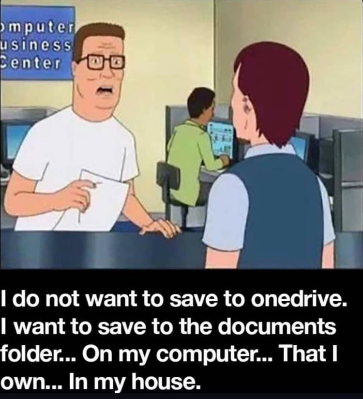

Before the cloud, software just ran on your machine: your files, your app, no internet required. That was normal — until SaaS moved everything onto other people’s servers, alongside the ad networks and data brokers that profit from capturing everything you do.
The cloud model we know today: great collaboration and sync, but your data — and the app itself — lives on someone else’s server.
Local-first keeps the good parts of both:
Your data lives on your device, first — the way it used to
The network is a sync + backup detail, not the source of truth
You still get cloud-style collaboration

The 7 principles (1–4)
The essay lays out seven ideals for local-first software:
No spinners — your work at your fingertips. Reads and writes hit local data, so the app responds instantly.
Your work is not trapped on one device. It syncs to every device you own, so you start on your laptop and pick up on your phone without thinking about it.
The network is optional. You get full read/write access offline, and syncs when you reconnect — connectivity helps, but not required.
Seamless collaboration with your colleagues. Several people edit the same document at once and changes merge cleanly — the teamwork people expect from the cloud, without depending on it.
The 7 principles (5–7)
The Long Now. The software should outlive the company and its servers: your files always open .
Security and privacy by default. Your data stays with you and can be end-to-end encrypted, so no provider holds plaintext access to everything you do.
You retain ultimate ownership and control. The data is yours to keep, move, or delete, and no one can revoke your access or change the terms out from under you.
Major players
Ink & Switch — independent research lab that coined the term and does much of the foundational work.
The 2019 essay’s four authors:
Martin Kleppmann — Cambridge researcher; wrote Designing Data-Intensive Applications
Peter van Hardenberg (“PVH”) — ran Heroku’s Postgres / data team; now leads Ink & Switch
Adam Wiggins — co-founded Heroku; wrote the 12-Factor App methodology
Mark McGranaghan — Heroku infrastructure engineer, author of Go by Example; later co-founded Muse
Software that stands out
Figma — multiplayer design, feels instant
tldraw — collaborative whiteboard (a conf regular)
Obsidian — your notes are just files on your disk
12-Factor ↔︎ Local-First
We’ve done 12-Factor talks here — and Adam Wiggins wrote both. They pull in opposite directions:
12-Factor (build for the cloud)
Local-First (own your data)
Processes are stateless (Factor VI)
State lives on your device (#2, #7)
Database is a remote attached resource (Factor IV)
The network is optional (#3)
App is tied to a deploy you run
App should outlive any deploy or company (#5)
The server is the source of truth
The client is the source of truth
Same author, opposite end of the pendulum: 12-Factor optimized the server; local-first re-centers the client.
Why it matters — and the tradeoffs
Why it matters:
Works offline; fast because it’s local
Resilient — no single point of failure
You own your data; it outlives the vendor
The honest tradeoffs:
Sync + merge is genuinely hard engineering ⚠️
Schema migration across old, offline clients ⚠️
Auth & permissions without a central authority 🚫
Search / discovery across distributed data 🚫
Why this is interesting for SPD
We build tools, not engagement machines. Local-first shines for focused tools and products — exactly what SPD ships — and its one “cost,” no central usage surveillance, isn’t a cost for us.
Ownership fits our users. Inputs and analyses can stay on the user’s machine, which sits well with partners handling sensitive or proprietary data.
Robustness as the default. Fast, offline-tolerant tools that keep working without a live connection — and results that outlive any single deployment.
Local-first and agents
No gatekeeper between the agent and your work. The data is local and open, so an LLM agent can read and edit it directly — no waiting on a central authority to approve an MCP server or cloud connector.
Agents collaborate like another peer. The agent works on the same local copy you do, and the background sync merges your edits and the agent’s cleanly — online or off.
Better tool interfaces → better agents. If our tools expose clear local interfaces for an LLM to act through, the collaboration gets dramatically more useful.
As tool builders, we can consider enabling these workflows
Demo: tldraw
(Live demo — placeholder)
tldraw — an infinite collaborative whiteboard, local-first under the hood.
What I’ll show: me and an LLM agent editing the same canvas — locally, in real time, merging cleanly.
The enabling tech: CRDTs
The hard part is: how do independent copies of the data merge back together without a central referee?
The answer most local-first tools reach for is CRDTs — Conflict-free Replicated Data Types.
Multiple devices edit their own copy, offline.
When they reconnect, changes merge automatically — no server needed to arbitrate.
Best-known implementations: Automerge (Ink & Switch) and Yjs.
You don’t need the math today — just know this is the machinery that makes it work.
CRDTs feel like Git — without the merge conflicts
If you use Git, you already have most of the mental model:
Git
Local-first / CRDTs
Everyone clones a full local copy
Every device holds a full local copy
Commit and work offline
Read and edit offline, anytime
push / pull / merge to sync up
Changes sync and merge in the background
Merge conflicts you fix by hand
Merges resolve automatically, by preset rules
The key upgrade: a CRDT is built so concurrent edits always merge cleanly — no <<<<<<< HEAD for the user to untangle.
Conf talk highlights (2026)
This year’s theme: “user empowerment in an age of fluid software” — data ownership, AI on your own terms, and open social protocols. A few that stood out:
Martin Kleppmann — Local-first in an unstable world
Steve Ruiz (tldraw) — Agents on the canvas
AI, on your device — Plaintext-first apps in the age of agents; Frontier LLM results, on device; Own your AI with local models
Open networks & data ownership — Paul Frazee (Bluesky) on scaling open networks; atproto; a panel on data ownership beyond local-first
Iroh — syncing terabytes of data, peer-to-peer
A CRDT reality check — Local-first collaborative spreadsheets: are CRDTs useful?
(Placeholder — I’ll dive into the specific talks that stuck with me next.)